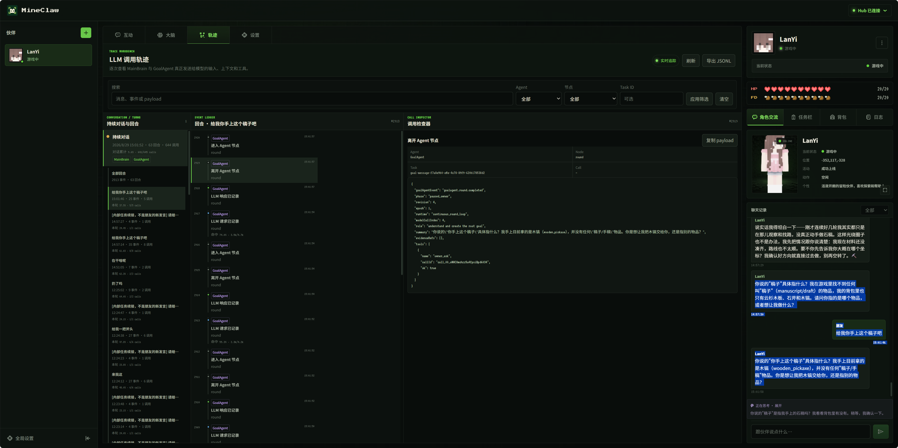

放大查看 ↗
放大查看 ↗工作台出现的位置就是本次指令的验收条件。下方两段游戏录像保留了从指令到结果的过程。
项目框架与实现
- 接收指令MainBrain玩家想要一把铁镐
- 确定目标GoalCompiler固定物品与交付条件
- 选择动作GoalAgent从指定箱子取物，再交付
- 在游戏中执行BodyExecutionRuntime提交动作并记录回执
 放大查看 ↗
放大查看 ↗ 放大查看 ↗
放大查看 ↗两段游戏实录
客户端如何查看执行过程

放大查看 ↗ 放大查看 ↗放大查看 ↗
放大查看 ↗放大查看 ↗工作台出现的位置就是本次指令的验收条件。下方两段游戏录像保留了从指令到结果的过程。
放大查看 ↗放大查看 ↗
放大查看 ↗放大查看 ↗